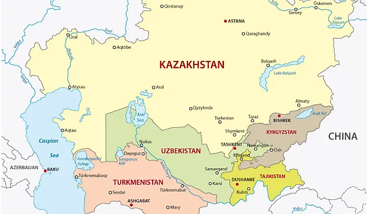

Kazakhstan
Explore traditional foods and cultural influences from Kazakhstan.
Explore KazakhstanExplore the food and culture of Central Asia
Log in to explore traditional foods and cultural connections from Central Asia.
Demo login for a future version of the application.
Discover traditional foods and cultural connections from Kazakhstan, Kyrgyzstan, Turkmenistan, and Uzbekistan. Choose a country below to begin exploring.

Explore traditional foods and cultural influences from Kazakhstan.
Explore KazakhstanExplore traditional foods and cultural influences from Kyrgyzstan.
Explore KyrgyzstanExplore traditional foods and cultural influences from Turkmenistan.
Explore TurkmenistanExplore traditional foods and cultural influences from Uzbekistan.
Explore Uzbekistan